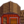
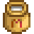

Cow
| Cow | |
 
| |
| Adults can be milked daily. A milk pail is required to harvest the milk. Lives in the barn. | |
| Information | |
| Building |  Barn |
| Purchase Price | |
| Produce | |
The Cow is an animal that lives in a Barn. Cows can be purchased at Marnie's Ranch for  1,500g. Cows come in two varieties: White and Brown. When purchasing a cow, the game decides randomly whether you will get a white or brown cow (50% chance). Cows can become pregnant and give birth.
1,500g. Cows come in two varieties: White and Brown. When purchasing a cow, the game decides randomly whether you will get a white or brown cow (50% chance). Cows can become pregnant and give birth.
Produce
- Main article: Animals#Produce
Cows who eat every day mature after 5 nights have passed. A mature and fed cow produce Milk every day. Milk does not vary depending on the color of the Cow, unlike Eggs. Once sufficient friendship and happiness is reached, they will produce Large Milk. Milk can be collected using a Milk Pail. Milking a cow increases friendship by 5 points.
Milk can be placed in a Cheese Press to produce Cheese, which sells for  230g or
230g or  345g depending on quality.
345g depending on quality.
| Image | Name | Description | Sell Price | ||||||||
|---|---|---|---|---|---|---|---|---|---|---|---|
| Milk | A jug of cow's milk. |
| |||||||||
|  | Large Milk | A large jug of cow's milk. |
|
Reproduction
Cows, like pigs, sheep, and goats, have a low chance to reproduce and can produce baby cows. The more animals there are inside the same barn, the higher the chance an animal will give birth. There is no indication that a cow is pregnant except the morning after the baby cow has been born. The player will receive a notice at the bottom of the screen before the day starts, stating "During the night, [parent's name] gave birth to a baby cow."
Selling
Cows can be sold. The selling price is dependent on how many hearts the animal has ( 1,950g max).
1,950g max).
To sell a coop or barn animal, right-click the animal after petting. The friendship/mood interface appears. Move the cursor over the gold coin button at the right to see how much you can sell the animal for. Click that button and the confirmation that follows to complete the sale.
| Animals and Produce | |
|---|---|
| Coop | Chicken (Egg • Large Egg • Brown Egg • Large Brown Egg) • Dinosaur (Dinosaur Egg) • Duck (Duck Egg • Duck Feather) • Golden Chicken (Golden Egg) • Rabbit (Wool • Rabbit's Foot) • Void Chicken (Void Egg) |
| Barn | Cow (Milk • Large Milk) • Goat (Goat Milk • Large Goat Milk) • Sheep (Wool) • Ostrich (Ostrich Egg) • Pig (Truffle) |
| Fish Pond | Fish (Roe) |
| Slime Hutch | Slimes (Slime • Slime Ball • Slime Egg) |
| Other | Cat • Dog • Horse • Turtle |